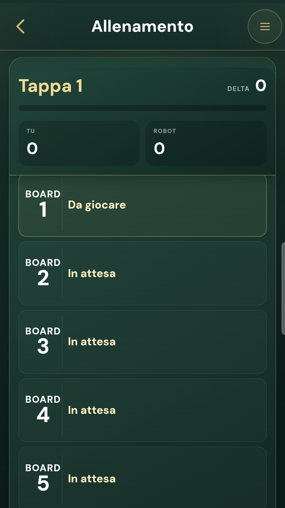
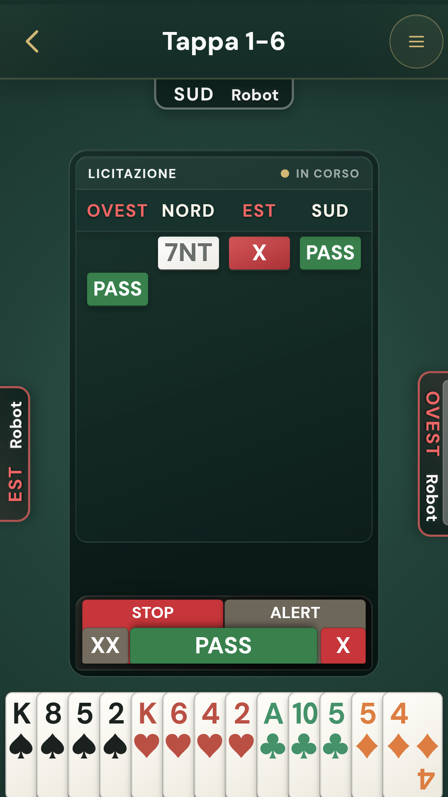
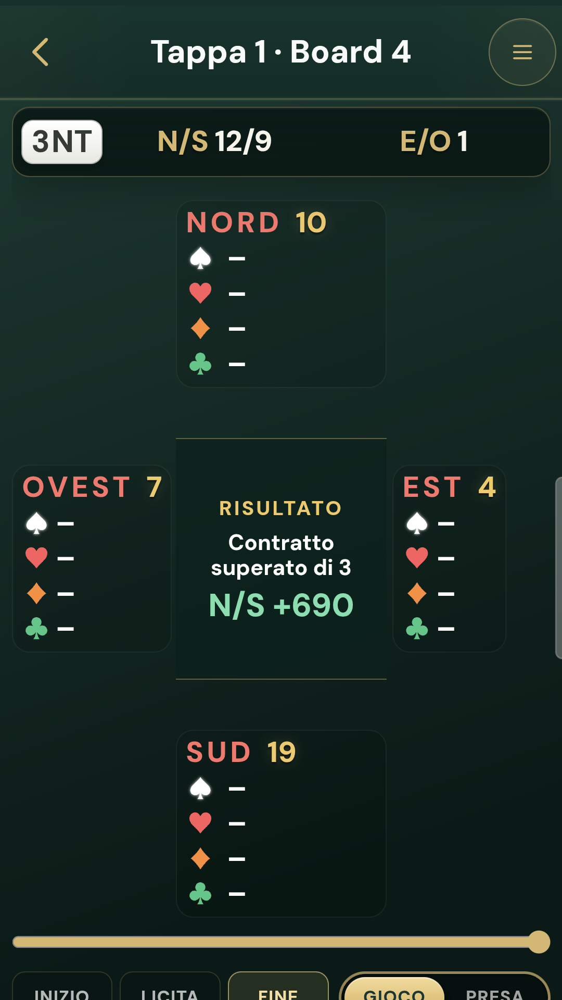
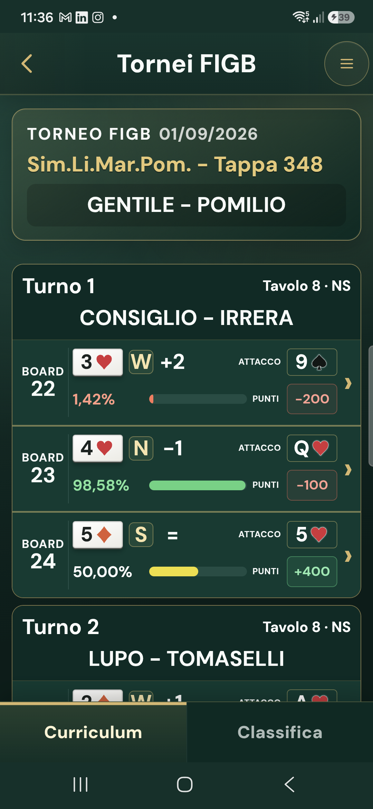

01
Prima volta
Il tuo account apre tutte le funzioni.
Puoi usare GrandBridge dalla Web App oppure installare l’APK Android. L’account mantiene profilo, amicizie e attività collegate ai servizi online.
Accedi
Scegli Google, Apple oppure email e password. Se usi l’email, segui l’eventuale conferma ricevuta nella posta.
Controlla il profilo
La prima card mostra email e codice utente copiabile. Aggiungi nome, cognome, foto e lingue parlate. Le modifiche vengono registrate mentre le fai.
Usa il menu
La lista raccoglie le funzioni di gioco. Foto profilo e ingranaggio restano in alto perché account e preferenze hanno uno scopo diverso.
La freccia torna alla pagina che ti ha portato lì. Aprire il Menu interrompe quel percorso e permette di scegliere una nuova funzione.
02
Allenamento
Una tappa alla volta, con ogni mano recuperabile.
Ogni tappa contiene una sequenza di board contro tre Robot. Il primo board disponibile è evidenziato; i successivi si aprono man mano.
- Tocca un board disponibile per iniziare.
- Le tappe completate restano nell’archivio con la loro data.
- Toccando una mano completata entri direttamente nel replay.
- Il confronto mostra il tuo risultato e quello del Robot.


03
Al tavolo
Licita e carte seguono il ritmo del bridge.
Durante la licita
Scegli il cartellino nel bidding box. Se è attiva la conferma al secondo tocco, il primo tocco lo porta in evidenza e il secondo lo gioca. Puoi toccare una licita già effettuata per leggerne il significato secondo gli accordi della coppia.
Durante il gioco
Tocca una carta consentita. Il morto compare dopo l’attacco iniziale e le prese restano leggibili prima che le carte vengano raccolte. Quando previsto puoi proporre un claim; il risultato viene registrato soltanto dopo la sua risoluzione.
Il tuo cartiglio evidenziato identifica sempre la posizione da cui stai giocando.
04
Dopo la mano
Il risultato diventa uno strumento di studio.
Il replay riproduce licita e gioco carta per carta. I comandi permettono di andare all’inizio, alla licita, alla fine, oppure avanzare e tornare indietro.
Apre una pagina dedicata con contratti realizzabili, miglior risultato competitivo, sacrifici e punteggi.
Riparte dalla stessa distribuzione. Scegli da quale posizione giocare contro tre Robot.
Nel replay dei Campioni il risultato segue la linea che ha giocato la mano; nelle tue partite segue la tua linea.

05
Amici
Un link per ritrovarsi al tavolo.
Da Amici puoi creare un invito e condividerlo con WhatsApp, email o qualsiasi applicazione del telefono. Il link contiene un codice sicuro e porta anche chi non conosce GrandBridge alla pagina di accesso.
Chi ha già GrandBridge
Apre il link, entra nel proprio account e conferma il collegamento.
Chi deve ancora entrare
Installa o apre la Web App, completa l’accesso e riprende l’invito.
Un rapporto semplice
Una persona è amica oppure no. Dall’elenco puoi rimuovere il collegamento.
06
Tavoli e tornei online
Scegli il compagno, poi entra in gioco.
Tavoli online
- Scegli se giocare solo o con un compagno. Nell’elenco compaiono gli amici disponibili.
- Invia la richiesta. Finché il compagno non accetta, Partecipa e Crea restano disattivati.
- Partecipa ora. GrandBridge cerca il primo tavolo compatibile per te o per la coppia.
- Crea tavolo. Imposta le poche condizioni necessarie e attendi gli altri giocatori.
Tornei online
I tornei disponibili sono ordinati per data. Puoi limitare la lista con pochi criteri, prenotarti e ritrovare le tue partecipazioni. Chi crea un torneo sceglie giorno, ora, numero massimo di coppie, turni, board per turno, categorie ammesse, tempo per la mossa e l’eventuale accesso riservato agli amici.
Se perdi la connessione, non aprire un altro tavolo: torna alla partita. Il servizio tenta di recuperare posto e stato dal punto confermato.
07
Sfide
Stesse mani, tempi diversi.
Una sfida permette a più giocatori di affrontare la stessa serie di board senza essere collegati nello stesso momento. Puoi invitare un amico, più amici oppure partecipare a una sfida del circolo quando disponibile.
- scegli i partecipanti dall’elenco degli amici;
- imposta una scadenza predefinita: 24 ore, 3 giorni o 7 giorni;
- completa i board entro la scadenza;
- consulta il confronto quando i risultati diventano disponibili.
08
Le tue mani
Una cronologia che riporta sempre al replay.
Lo Storico raccoglie le mani personali concluse in tavoli, tornei e sfide. La ricerca libera trova data, compagno, avversari o competizione. Toccando l’intera riga apri il replay; da lì puoi consultare il PAR o rigiocare.
Le tappe di Allenamento conservano una cronologia propria per evitare di mescolare esercizio personale e competizioni.

09
Tornei FIGB
Curriculum e classifica della tua gara.
Inserendo il numero di tessera puoi individuare i risultati pubblicati per il giocatore. La pagina del torneo distingue Curriculum e Classifica.
- Il Curriculum raggruppa i board per turno e coppia avversaria.
- Ogni board disponibile apre distribuzione e contratto giocato.
- PAR e Rigioca seguono il dettaglio del contratto.
- I dati non ancora pubblicati dalla fonte restano indisponibili.
GrandBridge presenta i dati disponibili; non sostituisce né certifica i servizi ufficiali della Federazione.
10
Didattica
Il corso GrandBridge, dalle regole al tavolo.
Il percorso di quarantuno lezioni parte dalla Guida didattica FIGB e ne segue la progressione. Le indicazioni della World Bridge Federation completano il metodo: poca teoria isolata, esempi pratici, mani preparate contro tre Robot e tornei di ripasso.
Il Sommario è una pagina autonoma, richiamabile durante il percorso; la freccia indietro riporta esattamente alla lezione lasciata. I quiz distribuiti nelle lezioni verificano la comprensione subito dopo ogni concetto.
Semi, carte e schemi usano la stessa rappresentazione del replay. In questo modo ciò che impari nella lezione torna identico quando liciti, giochi e rivedi una mano.
11
Impostazioni
L’app cambia mentre scegli.
Lingua
Cambia immediatamente l’interfaccia e viene ricordata sul dispositivo.
Leggibilità
Ridimensiona testi e comandi generali; carte, punteggi e gioco mantengono misure pensate per il tavolo.
Conferma al tocco
Decidi se carte e licite richiedono un secondo tocco.
Suoni e voce
Regola effetti e lettura delle voci del menu.
Bidding box
Scegli la disposizione più adatta allo spazio disponibile.
Morto
Scegli la disposizione verticale oppure in linea.
SalvataggioNon serve un pulsante finale: ogni modifica è contestuale e immediata.
12
Assistenza
Prima riprendi, poi segnala.
Torna indietro una volta e riaprila dal Menu. Le modifiche al profilo già confermate restano registrate.
Riapri la stessa partita e attendi il recupero dello stato. Evita di creare un secondo tavolo.
Controlla che la mano sia conclusa. Nei risultati esterni il replay dipende dai dati effettivamente disponibili.
Indica pagina, azione compiuta e ora approssimativa nella pagina Supporto.